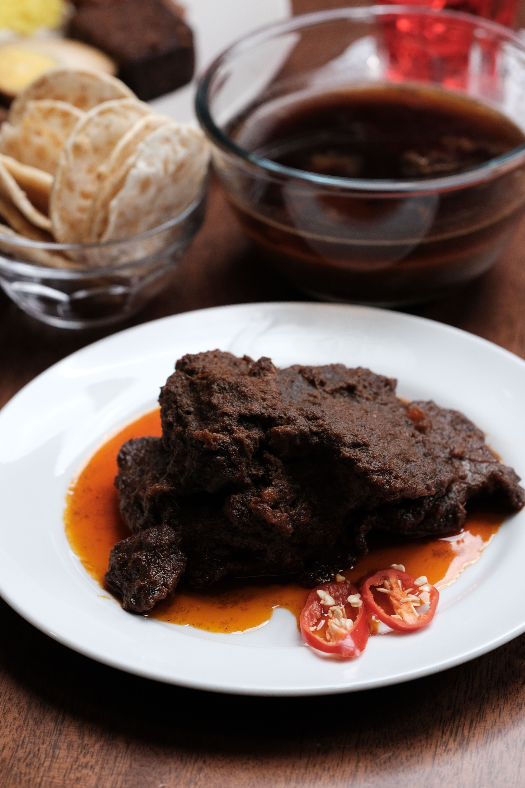

Rendang

About the dish
Rendang is a method of cooking meat slowly in coconut milk and a spice paste until the meat turns dark and juicy.
It's a Malaysian style well-done meat dish.
Beef is the most common meat but chicken also eat by people who dont consume beef.
Fun fact: Cooking it properly can take several hours of slow stirring.
- Beef or chicken
- Coconut milk
- Lemongrass
- Chillies
- Toasted grated coconut